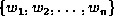
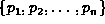
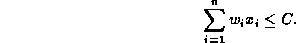

Data Structures and Algorithms
with Object-Oriented Design Patterns in C++
Data Structures and Algorithms
with Object-Oriented Design Patterns in C++
Let be the weight of the  item,
item,
 be the profit accrued when the
be the profit accrued when the  item
is carried in the knapsack, and
C be the capacity of the knapsack.
Let be a variable the value of which is either zero or one.
The variable has the value one
when the
item
is carried in the knapsack, and
C be the capacity of the knapsack.
Let be a variable the value of which is either zero or one.
The variable has the value one
when the  item is carried in the knapsack.
item is carried in the knapsack.
Given  and , our objective is to maximize
subject to the constraint

Clearly, we can solve this problem by exhaustively enumerating
the feasible solutions and selecting the one with the highest profit.
However, since there are  possible solutions,
the running time required for the brute-force solution
becomes prohibitive as n gets large.
possible solutions,
the running time required for the brute-force solution
becomes prohibitive as n gets large.
An alternative is to use a greedy solution strategy which solves the problem by putting items into the knapsack one-by-one. This approach is greedy because once an item has been put into the knapsack, it is never removed.
How do we select the next item to be put into the knapsack? There are several possibilities:
 gives an example where this is the case.
gives an example where this is the case.
| greedy by | |||||||
|
i | | profit | weight | density | optimal solution | ||
| 1 | 100 | 40 | 0.4 | 1 | 0 | 0 | 0 |
| 2 | 50 | 35 | 0.7 | 0 | 0 | 1 | 1 |
| 3 | 45 | 18 | 0.4 | 0 | 1 | 0 | 1 |
| 4 | 20 | 4 | 0.2 | 0 | 1 | 1 | 0 |
| 5 | 10 | 10 | 1.0 | 0 | 1 | 1 | 0 |
| 6 | 5 | 2 | 0.4 | 0 | 1 | 1 | 1 |
| total weight | 100 | 80 | 85 | 100 | |||
| total profit | 40 | 34 | 51 | 55 | |||
The bottom line about greedy algorithms is this: Before using a greedy algorithm you must make sure that it always gives the correct answer. Fortunately, in many cases this is true.
 Copyright © 1997 by Bruno R. Preiss, P.Eng. All rights reserved.
Copyright © 1997 by Bruno R. Preiss, P.Eng. All rights reserved.